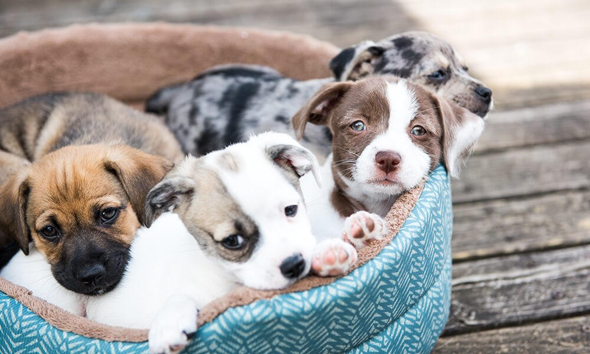

Sobre nós
Somos uma organização não governamental dedicada ao resgate, proteção e reabilitação de animais em situação de abandono, maus-tratos e vulnerabilidade. Nossa missão é oferecer uma segunda chance a cães, gatos e outros animais que precisam de cuidado, carinho e respeito. Atuamos por meio de ações de resgate responsável, atendimento veterinário, castração, vacinação e encaminhamento para adoção consciente. Cada vida importa, e trabalhamos diariamente para garantir que esses animais tenham a oportunidade de encontrar um lar seguro e amoroso. Além do resgate, desenvolvemos campanhas de conscientização sobre guarda responsável, controle populacional e combate aos maus-tratos. Acreditamos que a informação é uma ferramenta essencial para transformar realidades e construir uma sociedade mais compassiva. Nossa ONG é mantida com o apoio de voluntários dedicados, parceiros e doações da comunidade. Cada contribuição — seja tempo, recursos ou divulgação — faz a diferença na vida dos animais que acolhemos. Junte-se a nós nessa causa. Adote, apadrinhe, doe ou seja voluntário. Juntos, podemos salvar vidas e espalhar amor.
